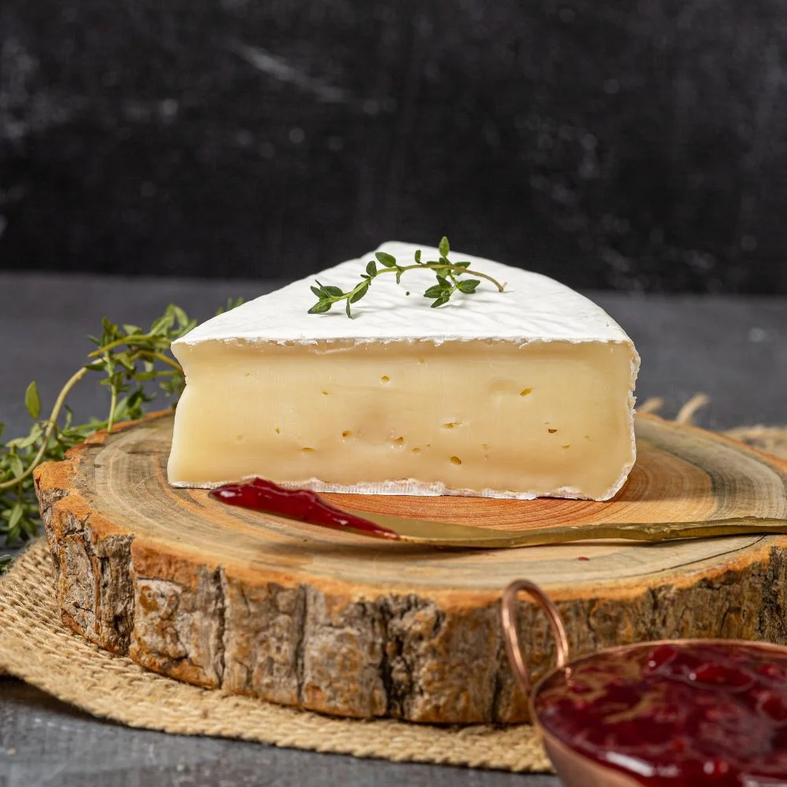

-
Da Holanda, tem sabor adocicado e ligeiramente nozes.
-

Origem italiana, tem uma textura firme, granular e um sabor intenso e ligeiramente salgado.
-
Queijo de cabra com notas de ervas finas.
-
Um dos queijos azuis mais famosos, sabor forte e picante, com textura cremosa.